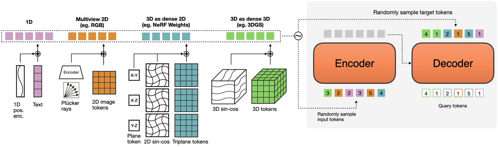
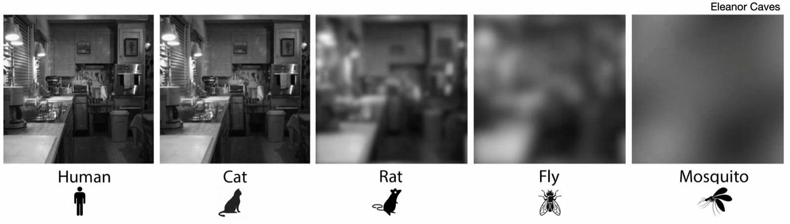
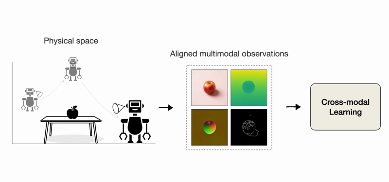
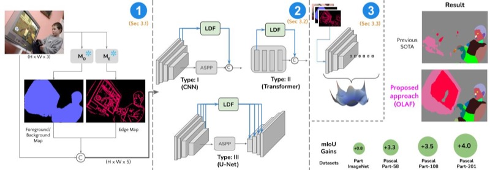
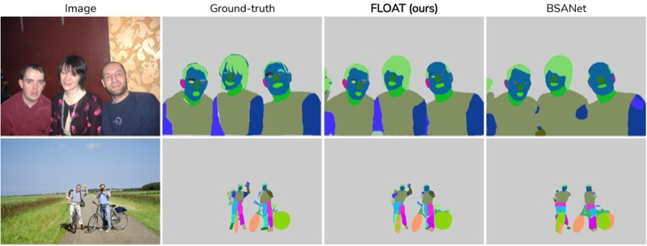
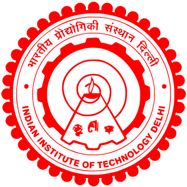
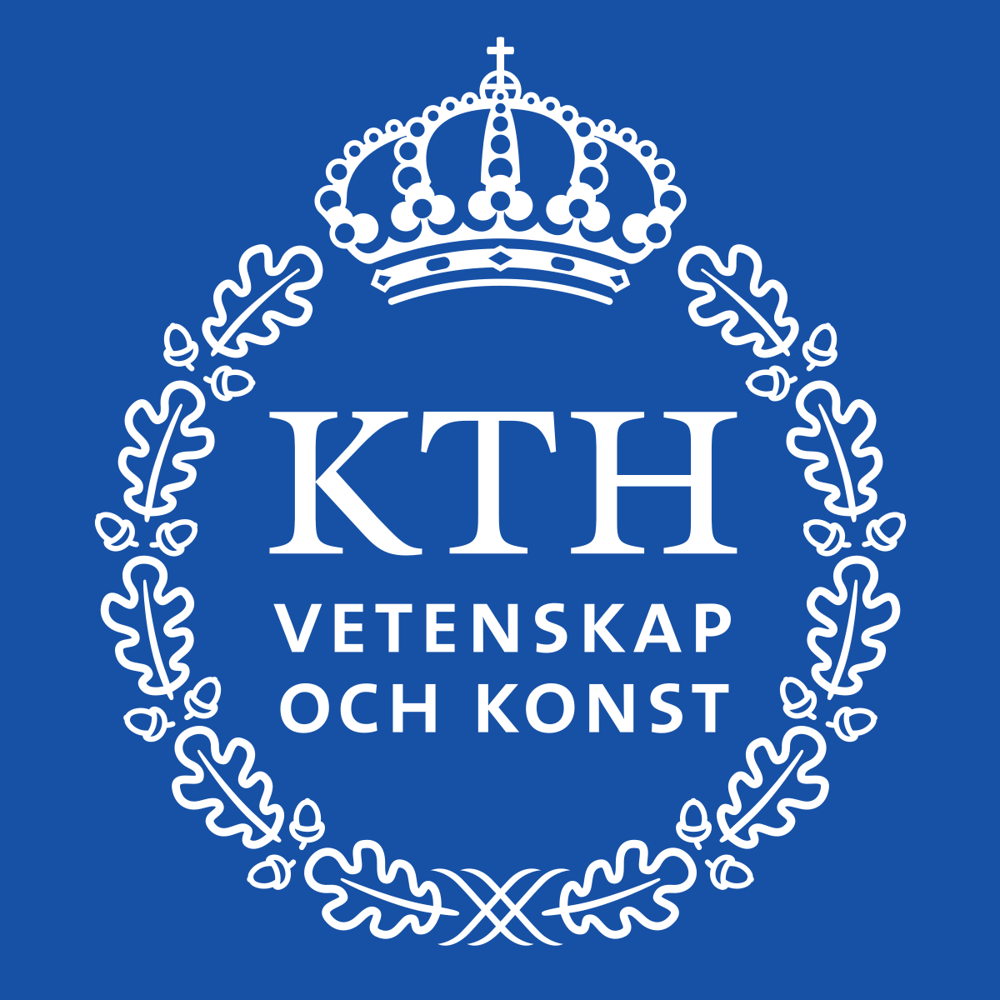
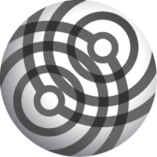

Hi! I'm Rishubh, a 4th year PhD student at VILAB, EPFL, advised by Amir Zamir. My research is broadly focused on multimodal learning, large-scale modeling and training, low-resolution perception and scientific discovery. Currently, I'm working on learning multimodal representations that enable scalable training and reasoning, and on closed-loop optimization for scientific discovery. Inspired by nature, I'm also interested in low-resolution perception for robotic control and in bringing multimodal learning to edge setups.
Previously, I was a Pre-Doctoral Researcher at Google Research India, where I worked with Pradeep Shenoy on cognitively inspired deep vision models. Before that, I was a quantitative software engineer at Graviton Research Capital and a software engineering intern at Google, Mountain View. I received a dual B.Tech. + M.Tech. degree in Computer Science from IIT Delhi.
Selected publications

News
- 2026OmniDiMM accepted at NeurIPS 2026.
- 2026Recognized among the top 200 reviewers at ICLR 2026.
- 2026Multimodality as Supervision accepted at ICLR 2026.
All publications
* denotes equal contribution
2026

2024

2023
2022
FLOAT: Factorized Learning of Object Attributes for Improved Multi-object Multi-part Scene Parsing →
CVPR 2022

2020
How Much Complexity Does an RNN Architecture Need to Learn Syntax-Sensitive Dependencies? →
ACL 2020 Student Research Workshop

2014 – 2019

Fall 2016

2019 – 2020
Google Research India
2020 – 2023
2020 – 2023
EPFL
2023 – present
2023 – present